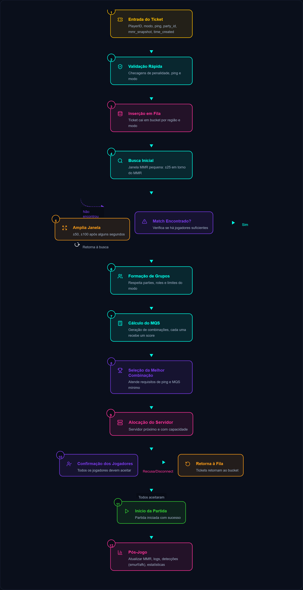

6.1 — Arquitetura técnica (visão geral)
Pense no sistema de matchmaking como uma linha de montagem com várias etapas — cada uma com uma função bem definida. Aqui estão os blocos principais, explicados de forma simples:
- Cliente (jogador) — quando o jogador clica em “Jogar”, o app envia um ticket com informações básicas: PlayerID, modo, ping, party_id e snapshot do MMR/trophies.
- Validador / Gateway — checa coisas rápidas: jogador está banido? está no modo correto? ping tolerável?
- Fila distribuída (Queue) — o ticket entra em buckets por região e modo.
- Matcher — o cérebro que pega tickets e tenta formar partidas. Usa janelas de MMR e regras de party/duo.
- Score de Qualidade (MQS) — para cada combinação calcula um score que representa “quão boa” é a partida.
- Alocador de servidores — seleciona servidor com menor latência média e disponibilidade.
- Orquestrador — cria a partida no servidor, avisa os jogadores e, no fim, atualiza dados (MMR, logs).
Resumo visual: abaixo há um espaço para você colocar o fluxograma completo que descreve os 12 passos do processo.
[IMAGEM: Fluxograma do Matchmaking]
